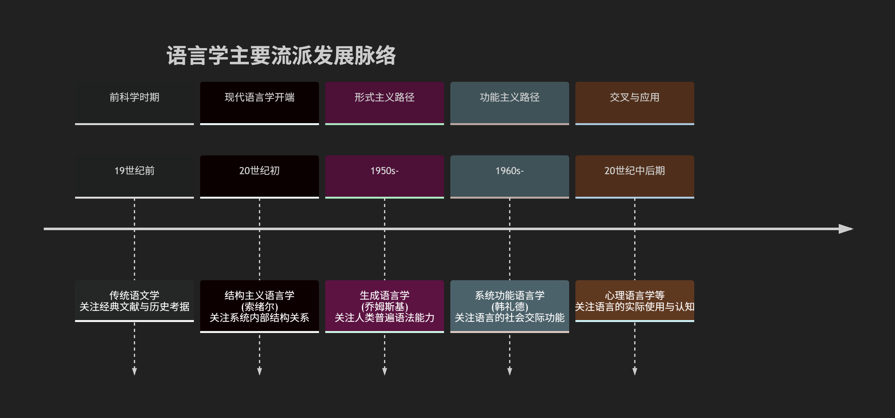
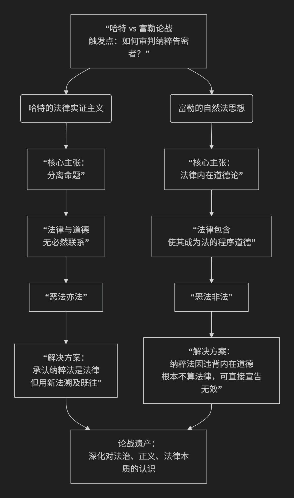

语言学和语言哲学
语言学及其主要流派
语言学是一门研究人类语言的科学。它系统地探索语言的本质、结构、功能、演变以及语言与思维、社会、文化之间的关系。其核心目标不是学习某种具体语言，而是揭示所有人类语言背后的普遍规律与机制。
语言学的演变与主要流派，可以通过下图清晰地概览其发展脉络与核心焦点：

以下，我们将沿此脉络，深入解析其核心领域与主要流派。
一、核心研究领域
语言学的研究范围广泛，主要包括以下几个核心分支：
语言学核心分支
语音学：研究语言的物理属性，即语音的产生、传递和感知过程。
音系学：研究特定语言中语音的模式、组合规则及功能，关注哪些语音差异能区别意义（如汉语的声调）。
形态学：研究词语的内部结构和构词规则（如前缀、后缀、词根）。
句法学：研究词语如何组合成合法的句子，即句子的结构规则。
语义学：研究语言单位（词、短语、句子）的意义。
语用学：研究语言在具体语境中的使用及其言外之意（如“能关下窗吗？”实际是请求）。
交叉与应用领域
社会语言学：研究语言与社会因素（如阶级、性别、地域）的相互关系。
心理语言学：研究语言的心理和神经基础，即人如何习得、理解和产出语言。
历史语言学：研究语言的演变历史及亲缘关系。
计算语言学：利用计算机技术处理自然语言，是人工智能的核心领域之一。
二、主要流派及其思想
语言学的发展史也是不同理论范式交替演进的历史，主要可分为两大路径：形式主义与功能主义。
1. 结构主义语言学
代表人物：索绪尔（奠基人）
核心思想：将语言视为一个自足的形式系统，意义来源于系统内部要素之间的差异和关系。区分了 “语言” （社会共有的系统）与 “言语” （个人具体的使用），并强调共时研究（某一时间点的系统状态）优先于历时研究（历史演变）。
影响：奠定了现代语言学的基础，使语言学成为一门独立的科学。
2. 生成语言学（形式主义代表）
代表人物：乔姆斯基
核心思想：关注人类的语言能力。认为所有人类大脑中都先天存在一个 “普遍语法” ，它是一套有限的抽象规则，可以生成和理解无限多的句子。语言学的目标是描述这套内在的心理机制。
焦点：高度抽象化、形式化，侧重句法的核心地位，探索语言的心智属性。
3. 系统功能语言学（功能主义代表）
代表人物：M.A.K. 韩礼德
核心思想：关注语言的社会功能。认为语言结构是由其需要实现的社会功能所塑造的。语言并非一个封闭的系统，而是一个意义潜势系统，人们从中选择以适应不同的交际语境。
焦点：强调语言在具体语境中的使用，分析语篇和话语，探索语言如何构建社会现实和人际关系。
4. 认知语言学
5. 其他重要流派
历史比较语言学（19世纪）：通过比较不同语言的词汇和语法，确定它们之间的亲缘关系，构拟原始母语（如印欧语系研究）。
美国描写主义语言学（20世纪上半叶）：强调对语言（尤其是美洲土著语言）进行客观、精密的共时描写，有一套严格的分析程序。
社会语言学与语用学（20世纪中后期）：将语言研究从理想化的“均质”系统转向真实、多元的社会使用，关注语言的变异和实际交际功能。
三、总结：语言学的图景
总而言之，现代语言学如同一幅多元的地图：
形式主义（以生成语言学为代表）试图描绘语言内在的、先天的 “生物蓝图”。
功能主义（以系统功能语言学为代表）则考察语言在社会互动中如何被用作 “交际工具”。
认知语言学探索语言背后的 “心智地图”。
社会语言学观察语言在现实生活中的 “社会分布图”。
这些流派并非彼此取代，而是从不同视角、运用不同方法，共同深化我们对人类最本质属性——语言——的理解。从探索抽象规则到关注实际使用，从研究内在机制到考察外部功能，语言学的发展正是人类不断追问“我们如何言说，何以理解”的思想历程。
语言学和语言哲学间关系
语言学和语言哲学虽然都聚焦于“语言”，但它们的出发点、核心问题和研究方法有根本区别，同时又深度交织、相互滋养。
简单来说：
语言学 是一门实证科学，主要研究 “语言如何运作？”。
语言哲学 是哲学的一个分支，主要探究 “语言是什么？”以及“语言与世界、思想和知识的关系是什么？”。
为了更清晰地展示两者错综复杂的关系，可以通过下图理解它们的定位、焦点与互动：

以下从几个维度具体阐释二者的关系：
一、核心区别：科学 vs. 哲学
维度 |
语言学 |
语言哲学 |
|---|---|---|
学科性质 |
经验科学。旨在客观描述、解释和预测语言现象。 |
哲学分支。旨在进行概念分析、逻辑论证和理论奠基。 |
核心问题 |
语言的具体结构和规律是什么？ |
语言的本质是什么？意义如何产生？语言如何表征世界和思想？ |
研究方法 |
实证与归纳。通过观察、实验、田野调查、 |
概念分析与思辨。 |
目标 |
构建描述和解释人类语言能力的科学理论。 |
深化我们对语言、心智和世界之间根本关系的理解。 |
一个经典比喻：
研究“水”，语言学如同化学，分析水的分子结构（H₂O）、物理性质、循环规律。
研究“水”，语言哲学则如同形而上学，追问“什么是水？”“我们关于水的概念从何而来？”“‘水’这个指称是固定的吗？”
二、相互影响与互动：理论供给与经验反馈
二者并非平行线，而是形成了深刻的“理论-实践”互动循环。
语言哲学为语言学提供理论框架和元思考
奠基性问题：语言哲学提出的问题，往往是语言学研究的起点和基石。例如，没有对“意义”的哲学思考（指称论、使用论等），现代语义学就缺乏理论深度。
澄清概念：语言学使用的许多核心概念（如“规则”、“理解”、“语法”、“可能性”），需要语言哲学来澄清其内涵和外延。乔姆斯基的“普遍语法”和“语言能力”概念，就有深刻的笛卡尔理性主义哲学背景。
设定界限：哲学思考帮助厘清语言学研究的范围和可能性。例如，维特根斯坦关于“私人语言不可能”的论证，就影响了我们对语言社会性和公共性的根本认识。
语言学为语言哲学提供经验材料和检验场
提供事实依据：语言学的具体发现（如语言类型的多样性、语法的复杂性、习得的关键期）为哲学讨论提供了坚实的经验基础，迫使哲学理论必须与语言事实相符。
挑战哲学假设：语言学的实证研究常常挑战哲学的直觉或思辨结论。例如，不同语言对颜色、空间、时间的编码方式差异，就对关于“概念普遍性”的哲学论点提出了挑战。
开辟新问题：语言学的进展（如对手势语、语言病理学、动物交际的研究）会催生新的哲学问题（如语言与思维关系的边界何在？）。
三、交叉领域：彼此融合的“灰色地带”
在以下领域，语言学和语言哲学的界限变得模糊，学者需要同时具备两种素养：
语义学：这是最核心的交叉地带。哲学家（如弗雷格、克里普克）提出了关于意义、指称、真值条件的核心理论，而语言学家则致力于将这些理论形式化，并应用于解释具体语言中词句意义的组合与变化。
语用学：哲学家奥斯汀和塞尔的“言语行为理论”直接开创了这一语言学分支。格赖斯的“会话含义”理论也是哲学思辨的产物，如今已成为语用学的基石。
心智哲学与心理语言学：关于“语言如何表征思想”、“是否存在思想语言”的哲学争论，与心理语言学关于“语言加工机制”、“语言与认知关系”的实证研究紧密结合。
总结
可以将二者的关系类比为 “物理学与科学哲学” 或 “生物学与生命哲学” 的关系。
语言学是前线科学家，在实验室和田野中解剖语言的“机体”，绘制其“地图”。
语言哲学是战略思想家，在后方追问我们为什么要绘制地图、地图与领土的关系是什么、以及我们绘制地图的工具有何局限。
没有语言哲学的语言学可能迷失在细节中，缺乏深度和方向；没有语言学的语言哲学则容易陷入空想，脱离人类语言实践的丰富现实。二者共同构成了我们理解“人类为何以及如何拥有语言”这一奇迹的完整智识拼图。
各种流派间有什么关系？
这是一个非常深刻的问题，揭示了20世纪思想史的一条核心脉络。语言学和语言哲学的各流派之间并非平行发展，而是构成了一个相互竞争、相互启发、时而融合、时而分道扬镳的复杂网络。
我们可以从两条主线和三个交叉点来梳理它们的关系：
一、两条主线：内部结构 vs. 外部功能
这两条主线分别代表了研究语言的两种根本取向，它们贯穿了语言学和语言哲学。
形式主义/内在论路径：关注语言的内部结构、形式规则和心智基础。
语言学代表：结构主义语言学（索绪尔） → 生成语言学（乔姆斯基）。
语言哲学代表：早期分析哲学/理想语言学派（弗雷格、罗素、早期维特根斯坦的图像论），关注语言的逻辑形式、意义与真理。
功能主义/外在论路径：关注语言的社会功能、实际使用和外部关联。
语言学代表：系统功能语言学（韩礼德） → 认知语言学、社会语言学。
语言哲学代表：日常语言学派（后期维特根斯坦、奥斯汀、塞尔）、言语行为理论，以及后来的语用学转向。
二、三个关键的交叉与互动节点
节点一：结构主义的共同根源
索绪尔的结构主义语言学与20世纪初的哲学思潮（尤其是强调系统和关系的思潮）同步诞生。它不仅是语言学的革命，也为后来的哲学结构主义（如人类学、文学批评中的结构主义）提供了方法论模型。索绪尔关于“语言/言语”、“能指/所指”的区分，本身就是深刻的哲学思考，直接影响了哲学对符号和意义的看法。
节点二：哲学为语言学提供“理论发动机”
乔姆斯基的生成语言学的哲学根基是笛卡尔理性主义和康德哲学。他关于“普遍语法”和“语言能力”的假设，是对哲学上“先天知识”和“心智结构”问题的直接回应。他的理论旨在回答柏拉图问题（知识的来源），这是一个经典的哲学认识论问题。
认知语言学的哲学基础则是体验哲学和现象学，反对乔姆斯基的心智内在主义和天赋论。它主张语言源于身体与世界的互动，这受到了哲学上（如梅洛-庞蒂的具身哲学）和心理学上（如皮亚杰的发生认识论）思想的深刻影响。
节点三：语言学为哲学提供“事实检验场”
日常语言学派的哲学家（如奥斯汀）通过对语言细微用法的分析，来解决传统的哲学困惑（如“知道”和“相信”的区别）。这促使哲学从建构理想语言转向分析实际语言，并直接催生了语用学这一语言学分支。
言语行为理论（哲学提出）成为语用学的基石。哲学家塞尔进一步将其系统化，探讨“语言如何做事”，这与社会语言学、话语分析产生了强烈共鸣。
语义学的争论：语言哲学家（如克里普克、普特南）关于指称（名称如何指向对象）和意义的理论（如历史因果理论、语义外在主义），为语言学的语义研究提供了核心的理论框架和持续的辩论话题。
三、具体关系网络图景
领域 |
流派/代表人物 |
核心关切 |
与另一领域的主要互动关系 |
|---|---|---|---|
语言哲学 |
理想语言学派（弗雷格、罗素、早期维特根斯坦） |
语言的逻辑结构、意义与真理的关系 |
为形式语义学提供了逻辑工具； |
日常语言学派（后期维特根斯坦、奥斯汀） |
语言的实际用法、言语即行动 |
直接催生了语用学； |
|
言语行为理论（奥斯汀、塞尔） |
说话即是做事（以言行事） |
成为语用学、社会语言学、话语分析的核心理论之一。 |
|
指称与意义理论（克里普克、普特南） |
名称如何指向世界、意义的确定 |
为语义学提供了核心哲学争论（描述论 vs. 直接指称论）， |
|
语言学 |
结构主义语言学（索绪尔） |
语言作为一个自足的关系系统 |
为哲学的结构主义运动提供了范式； |
生成语言学（乔姆斯基） |
人类先天的语言能力、句法的形式规则 |
其哲学预设（理性主义、心智内在主义）引发与哲学家的持续对话与争论； |
|
系统功能语言学（韩礼德） |
语言的社会功能、语篇与语境 |
其系统思想与哲学的系统论有呼应； |
|
认知语言学（莱考夫、兰艾克） |
语言是认知的体现，基于体验和隐喻 |
直接挑战了分析哲学和乔姆斯基哲学的核心假设； |
总结：一种共生与博弈的关系
一言以蔽之，语言哲学为语言学提供“问题意识”和“概念工具”，而语言学为语言哲学提供“经验事实”和“理论检验”。
哲学提出问题，语言学尝试解答（如“什么是意义？”→ 催生了语义学）。
语言学发现新事实，哲学反思其含义（如“所有语言都有递归性吗？”→ 引发关于人类心智独特性的哲学讨论）。
二者在“语义学”和“语用学”领域深度融合，难分彼此。
在“语言与心智”的根本问题上，它们正面交锋（如乔姆斯基 vs. 莱考夫，本质上是哲学上的理性主义 vs. 经验主义在语言学战场上的对决）。
因此，理解语言学流派必须了解其背后的哲学预设；而理解语言哲学流派，也必须看其是否与人类语言的实际复杂性和多样性相符。它们共同编织了一张探索“人类何以拥有语言”这一根本谜题的智慧之网。